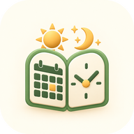

קלוח לאנדרואיד
בפיתוח · דרושים בודקים ל־Google Play
אותו לוח, אותם זמני היום ואותם אירועים אישיים כמו בקלוח מק ובאיי־קלוח — בטלפונים עם אנדרואיד.
מה האפליקציה עושה
- תצוגת חודש אזרחי וחודש עברי, היום ומעבר לשנה.
- חגים ומועדים יהודיים, ישראליים ואזרחיים, פרשת השבוע ושבתות מיוחדות, לארץ ישראל או לחוץ לארץ.
- זמני היום לכל מיקום, לפי השיטות המובנות או לפי שיטה משלך.
- אירועים אישיים — אזכרות, ימי הולדת, ימי נישואין ותאריכים חד־פעמיים — עם תזכורות.
- התראות זמנים, לעולם לא בשבת וביום טוב.
- הדפסת שנה של שבתות וחגים, או ייצוא של כל ימי השנה לגיליון CSV.
- עברית ואנגלית. העברת אירועים אל קלוח במק, באייפון וב־Windows וממנו, בקובץ האירועים של קלוח.
דרישות
אנדרואיד 8.0 ומעלה.
הצטרפו לבודקים
קלוח לאנדרואיד כמעט מוכן ל־Google Play. לפני שאפליקציה חדשה מתפרסמת, Google דורשת בדיקה סגורה: לפחות 12 אנשים שמשתמשים בה 14 ימים ברציפות. אפשר לעזור — ולקבל את קלוח בטלפון לפני כולם.
מה צריך
- טלפון או טאבלט עם אנדרואיד 8.0 ומעלה.
- חשבון Google — זה שמשמש ל־Google Play באותו טלפון.
מה מבקשים
- להשאיר את קלוח מותקן לפחות שבועיים.
- לפתוח אותו מדי פעם: לבדוק זמנים, לחפש תאריך, להוסיף אזכרה או יום הולדת.
- לספר לנו מה מצאתם — כל דבר שגוי, מבלבל או חסר.
איך מצטרפים
- מצטרפים לקבוצת הבודקים: בודקי קלוח לאנדרואיד. יש להתחבר עם אותו חשבון Google שבטלפון.
- פותחים את קישור הבדיקה, בטלפון או במחשב, ומאשרים את ההצטרפות לבדיקה. יש להשתמש באותו חשבון Google.
- מתקינים את קלוח מ־Google Play בטלפון: קלוח ב־Google Play. הקישור עובד אחרי שלב 2; לפעמים זה לוקח כמה דקות.
כתובת הדוא״ל שלכם משמשת רק כדי לתת לכם גישה לבדיקה, וחברי הקבוצה אינם רואים זה את זה. כדי להפסיק לבדוק, עוזבים את הקבוצה ומסירים את קלוח.
מצאתם משהו? כתבו לנו דרך התמיכה.
עזרה
העזרה כלולה באפליקציה.